MoBagel Dashboard
Introduction
Welcome to the MoBagel Dashboard, a snapshot of your devices for easy tracking and analysis.
In this tutorial, we will guide you through each part of the MoBagel Dashboard.
Your Current Products
On the left hand side of the dashboard, under the MoBagel logo, a drop-down menu will list the products you have already created.

To create a new one, simply click on +New Product.

The Dashboard
Listed below follows the order of the left menu on the MoBagel dashboard, skip to the page that most interests you or follow along and see what MoBagel's dashboard can do!
- Analytics
- Monitoring
- Prediction
- Configuration
- Product Settings
- Device Management
- Data Setup
- Docs
Analytics
Usage
-
Usageallows you to have a quick overview of all your devices all on one page, showing the number of users with regard to the time.
-
On the upper right hand side, click on
Day,Week,MonthorYearand the graph changes along withPeak UsageandLowest Usageunderneath.
Total Users
- Shows all the current devices available
Active Users
- Shows devices currently active, this information can also be found in Configuration -> Device Management
Peak Usage
- Indicated at the highest point in the graph above.
Lowest Usage
- Indicated at the lowest point in the graph above.

-
On the upper right hand side we will also find some useful tabs under Day, Week, Month, and Year for manipulating the user frequency graph.
 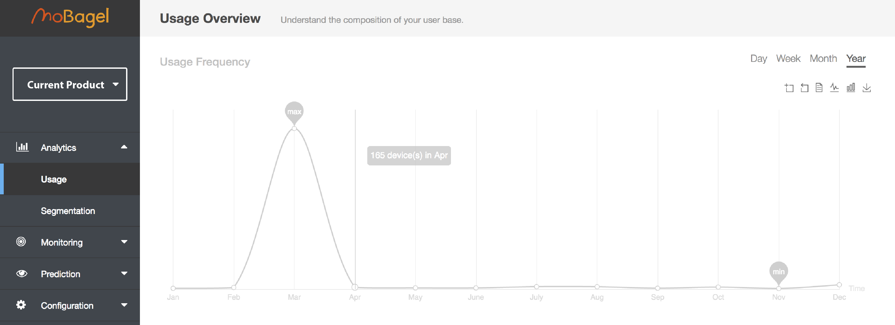
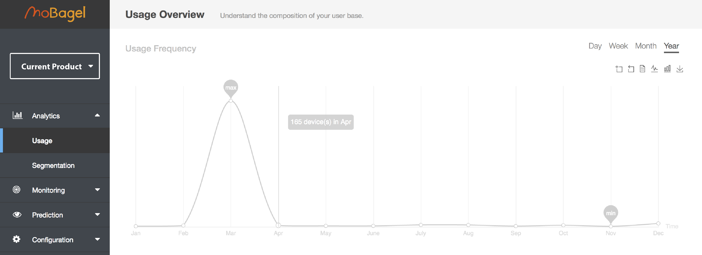
 -
- Zoom- Choose a timeframe by clicking on Zoom once, then select the area on the graph you would like to magnify. Repeat to zoom in again.
- -
Reset- Graph goes back one step each time you click on Reset.
 -
- Raw Data- See Raw Data used to create the graph, click on “close” on the lower-right hand side to return to graph.
 -
- Line- Line graph is set as default.
- 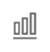 -
Bar- Click on Bar to show data as a Bar graph.
 -
- Save as Image- Download current graph shown.
-
Last Usage
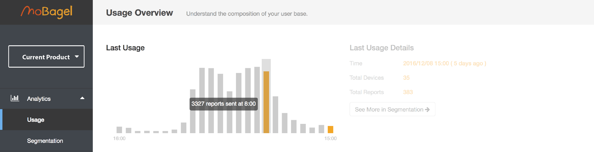- See how many reports were sent each hour for the last 24 hours. Place mouse cursor on bar for details.
Last Usage Detail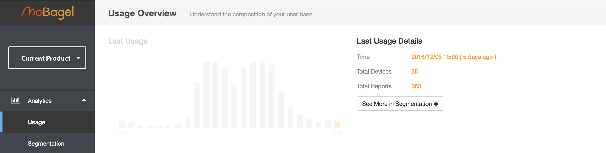- Time
- Last time a report was sent.
- Total Devices
- Total Reports
- See More In Segmentation
- Click to filter customised results in the “Segmentation” page.
- Time
Property Breakdown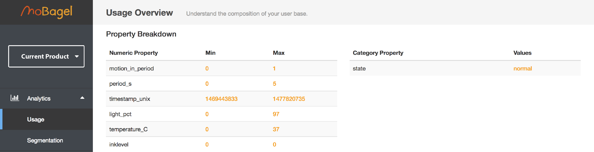- Listed here are all sensor properties sent in each report, also showing the range of values for each property.
- Numeric Property
- Category Property
- Listed here are all sensor properties sent in each report, also showing the range of values for each property.
Usage Location- Manage your devices and see where they are located from latitude and longitude data in the report.
- Country
- User
- %User
- Manage your devices and see where they are located from latitude and longitude data in the report.
Segmentation
-
Condition
- Create a segment using filters, for a specific timeframe or property states

- Click on
Add ruleon the right hand side 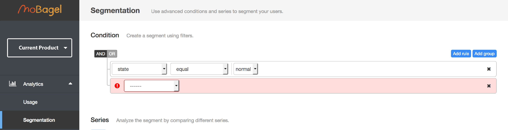
- Click on
Add groupfor more complex filtering -
Select the properties you would like to filter with
AND/OR. 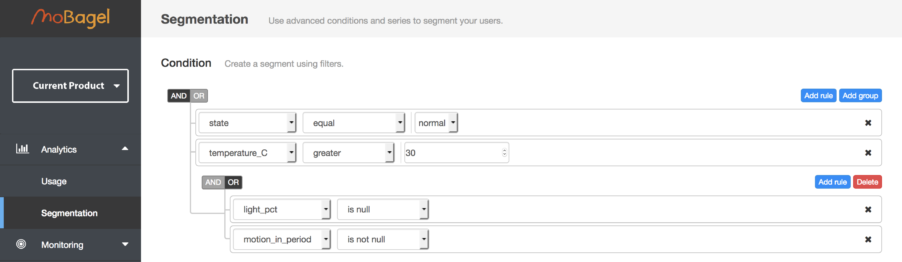 -
e.g. "state equal normal"
AND"temperature_C is greater than 30”AND("light_pct is null"OR“period_s is not null”)
- Create a segment using filters, for a specific timeframe or property states
-
Series
- Analyse the segment by comparing different series. 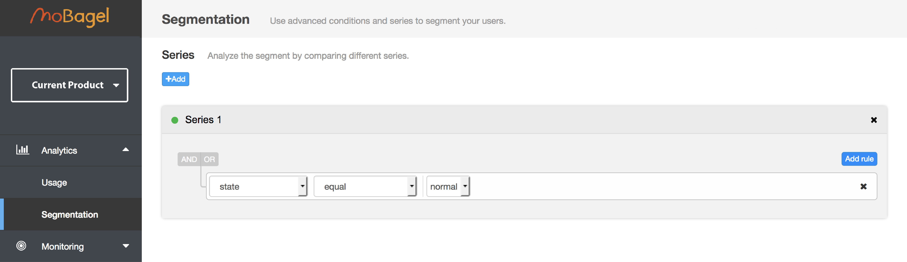
- Click
+Addto create a new series.
- Add as many series you would like to compare. 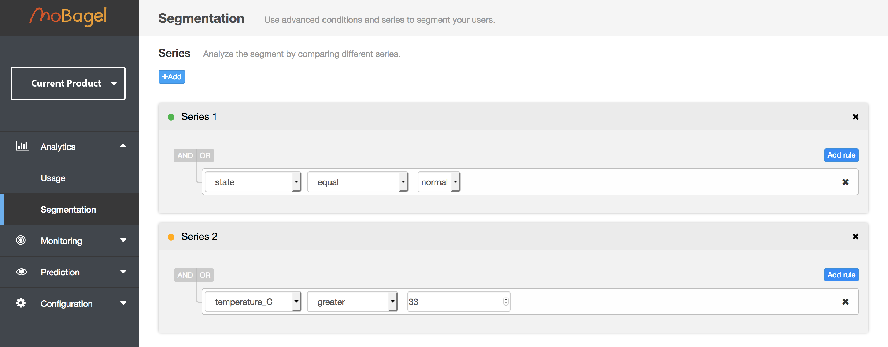
- e.g. We would like to see the a series that shows “state equal normal” and compare this to another series “temperature_C greater 33” on the same graph
-
Select Y-Axis
- Configure your result to display the number of devices, number of reports, or property with respect to time.

- e.g. Here we choose
Device. 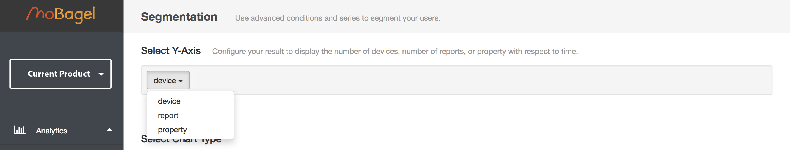
- Configure your result to display the number of devices, number of reports, or property with respect to time.
-
Select Chart Type
- Line graph is set as default. 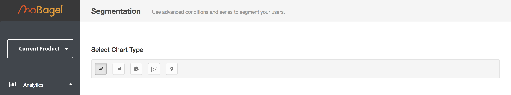
-
Result
- Scroll to the bottom of the page to generate results.

- Set the time frame on the right hand side 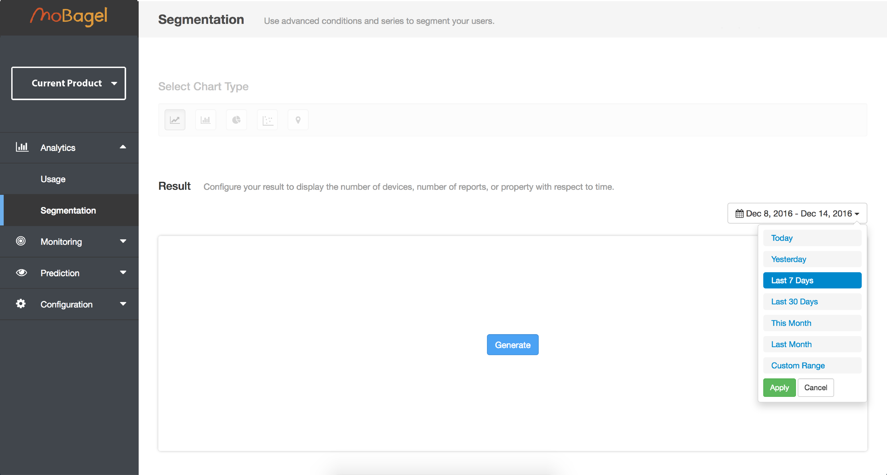
- e.g. 12/01/2015 - 12/03/2016

- Click
Generate, this will need to be done every time there are changes made to the filters above.
- Click on the name of the series to hide/show it on the graph.

Zoom,Reset,Raw Data,Line,BarandSave as Imagework the same way as mentioned before.
- Scroll to the bottom of the page to generate results.
Monitoring
Real Time
- If you have not set up any monitoring or alerts, click on the blue
Set up nowbutton. You will then be taken to theNotificationpage. - Continue this part after you have configured your settings in
Notificaiton.
- All changes from your device reports will show on screen in real time, coming from the right.

Notification
-
Click on
Configure Notificationto set up monitoring for your product. 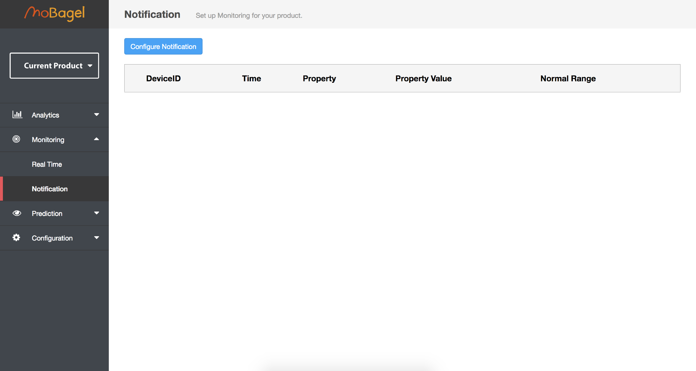 -
Current Notification Method
- Your currnet method of notification is shown here.

- Your currnet method of notification is shown here.
-
Configure Method
- Your currnet method of notification is shown here. 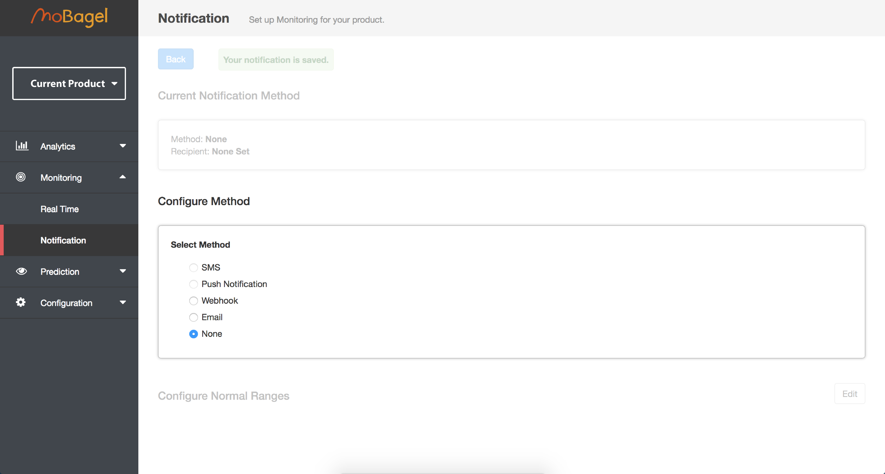
-
Configure Normal Ranges
- If you have not set up
Device Settingsyou will find nothing here.
- Configure your normal ranges here by clicking on the
Editbutton. If your report values exceed the ranges, you will receive a notification.
- If you have not set up
Prediction
Recommendations
-
On the top of the page, you can decide the frequency of the data and the time window you would like to observerve.

- The
History(Red Line) andPrediction(Dotted Line) of your report data will be shown here. 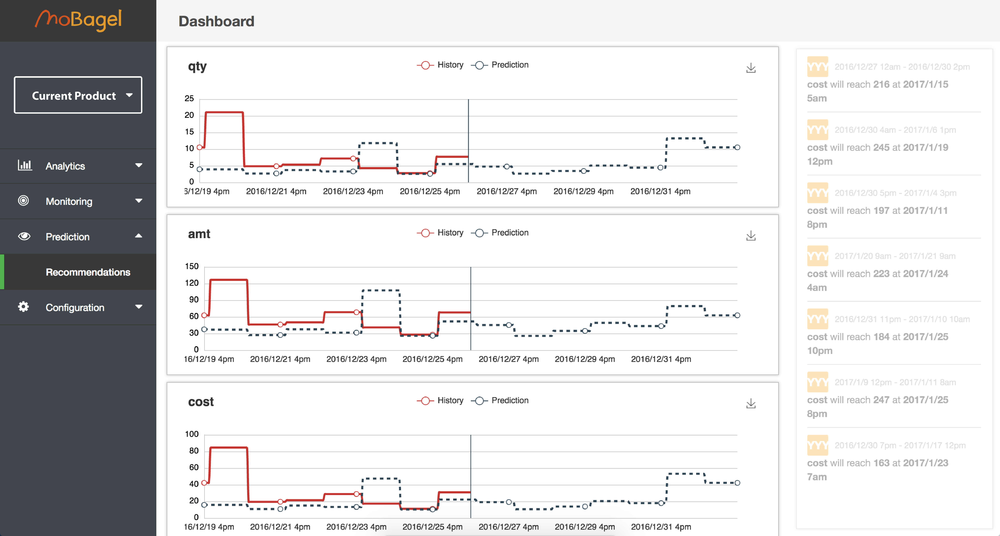
- Click on
Predictionto hidePrediction. 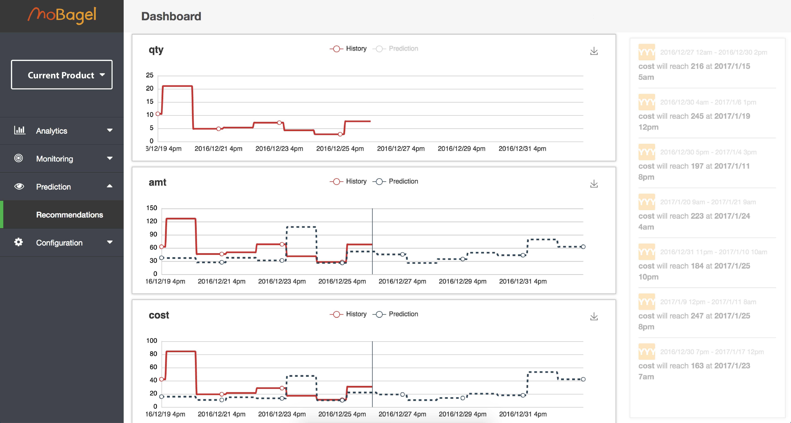
- Click on
Historyto hideHistory. 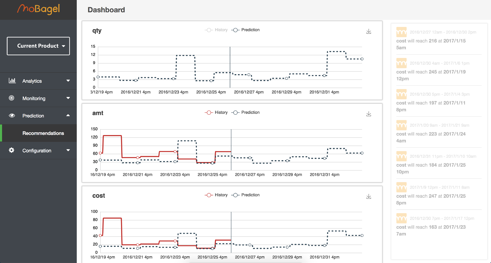
- Suggestions for various actions will be listed on the right hand side.

- The